Dzień dobry!
Podana cena obejmuje szacowany koszt zakupu pojazdu w USA lub Kanadzie
Dlaczego my?
➤ Importer z wieloletnim doświadczeniem – Twoje auto w bezpiecznych rękach
➤ Własne autotransportery – bezpieczny transport po Europie
➤ Własny Central Dispatch oraz legalna firma w Stanach Zjednoczonych – pełna kontrola i brak dodatkowych kosztów
➤ Własny warsztat blacharsko-lakierniczy z ponad 25 letnim doświadczeniem
➤ Gwarancja najwyższej jakości usług
Oferujemy także
- kompleksowy montaż nowoczesnych instalacji LPG
- pełne wsparcie techniczne oraz doradcze
- na instalacje gazowe udzielamy 7 lat gwarancji bez żadnego limitu kilometrowego.
- gwarancja udzielona na instalację gazową jest również gwarancją na zawory i gniazda zaworowe w głowicy silnika.
Nie odpowiada Ci prezentowany przez nas egzemplarz? - Skontaktuj się z nami, a przedstawimy pełną ofertę samochodów dostępnych w USA oraz Kanadzie
Możemy zająć się procesem naprawy samochodu w naszym warsztacie, realizacje możecie Państwo zobaczyć na naszym kanale YouTube
https://www.youtube.com/c/TopCarImportAutzUSA
Na życzenie przygotujemy komplet dokumentów potrzebnych do rejestracji, pomożemy ze wszelkimi formalnościami oraz przystosujemy auto do standardów europejskich
Więcej informacji pod numerem telefonu
Zadzwoń lub odwiedź nasze biuro!
Nr tel. – Darek
kontakt@topcatslask.com
Adres biura:
ul. Daleka 17
41-923 Bytom
Odwiedź nas na stronie i naszym Facebooku!
https://topcarslask.com/
https://importzusa.net/
https://www.facebook.com/TopCarSlask
Niniejsza oferta ma charakter informacyjny i nie stanowi oferty w myśl Art.66, § 1. Kodeksu Cywilnego
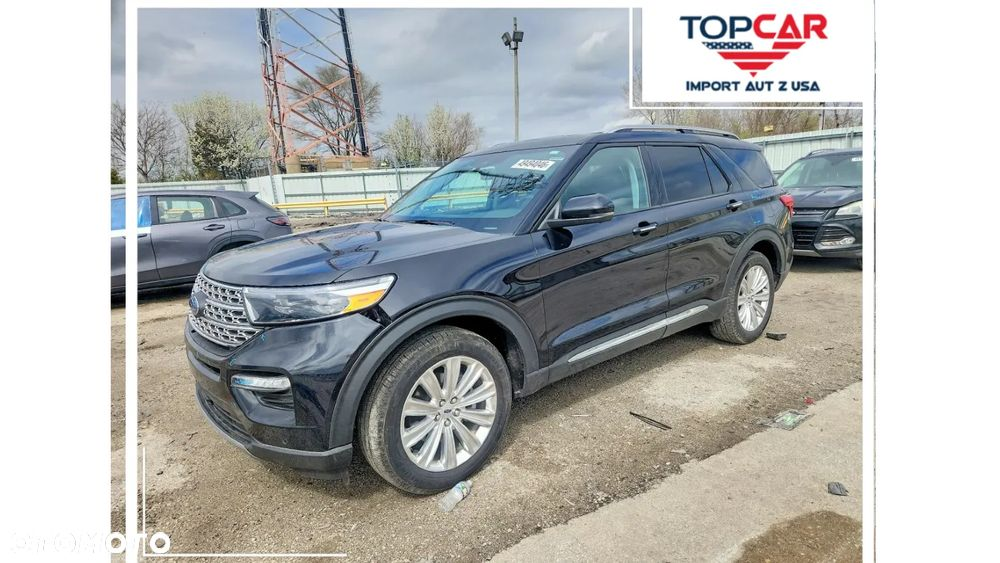
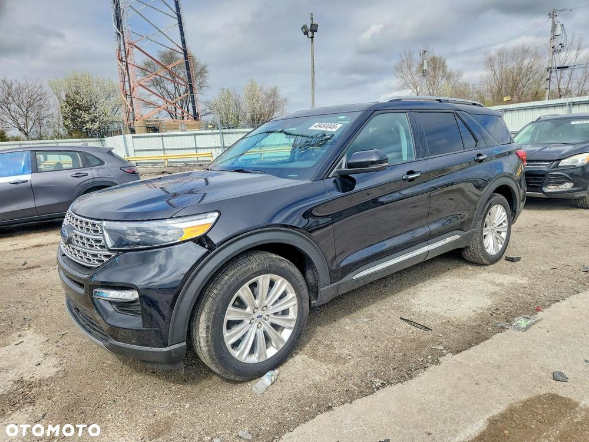
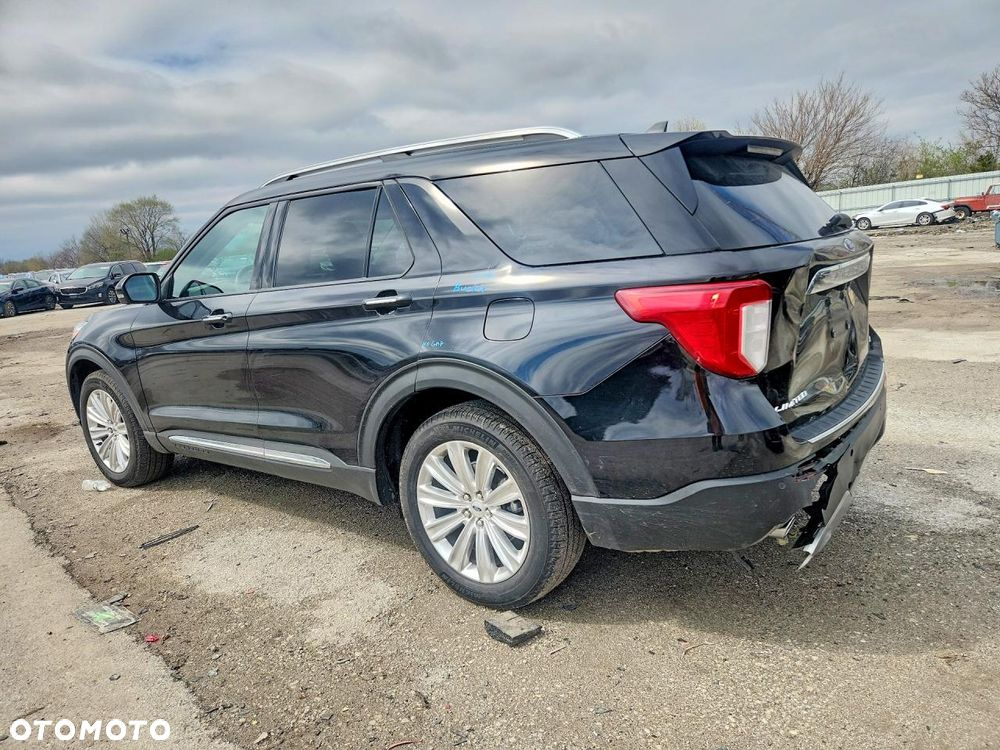
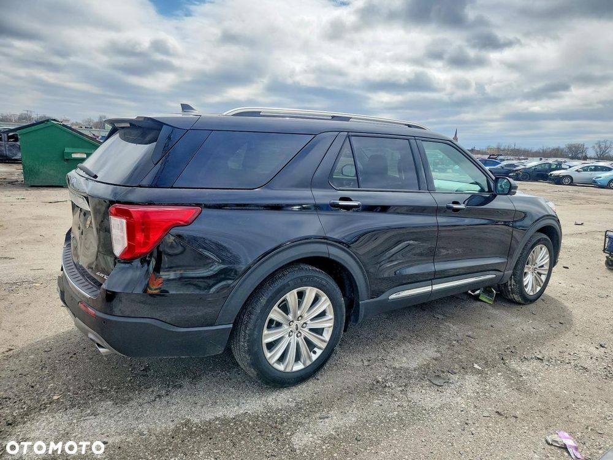
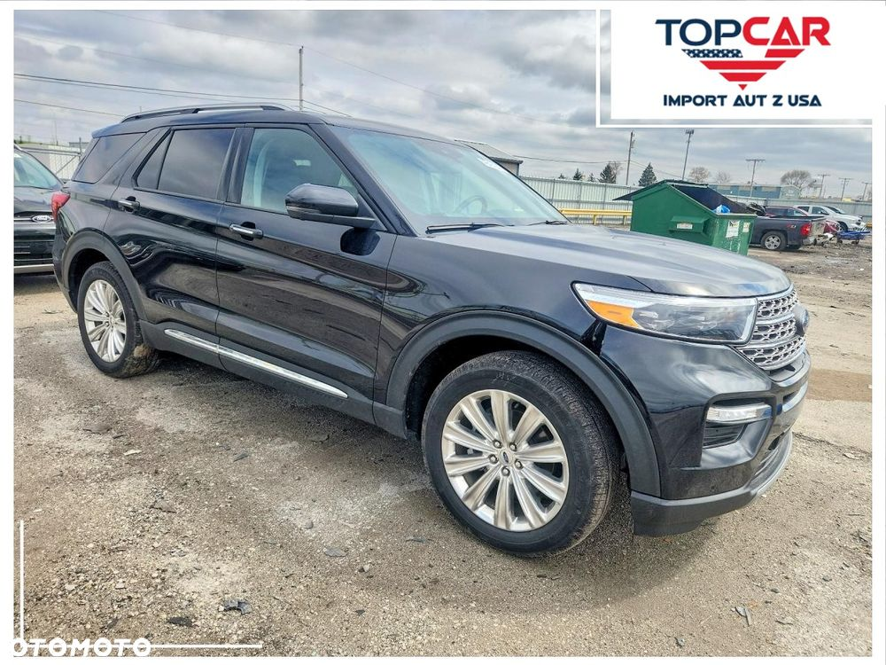
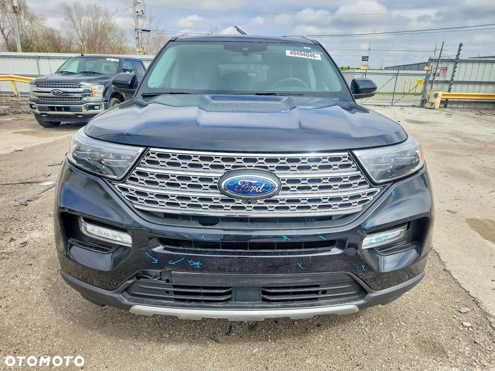
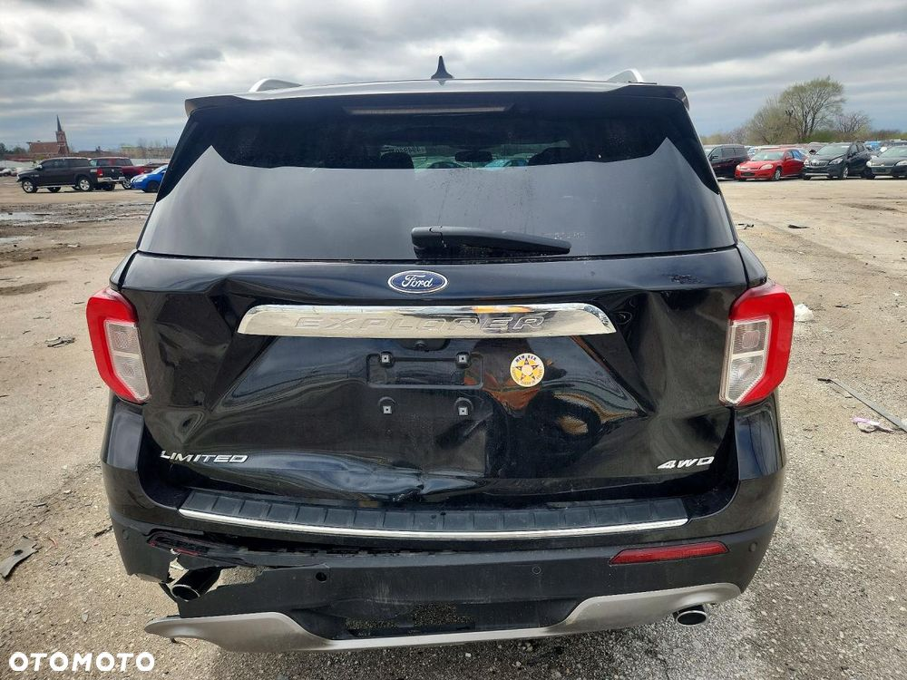
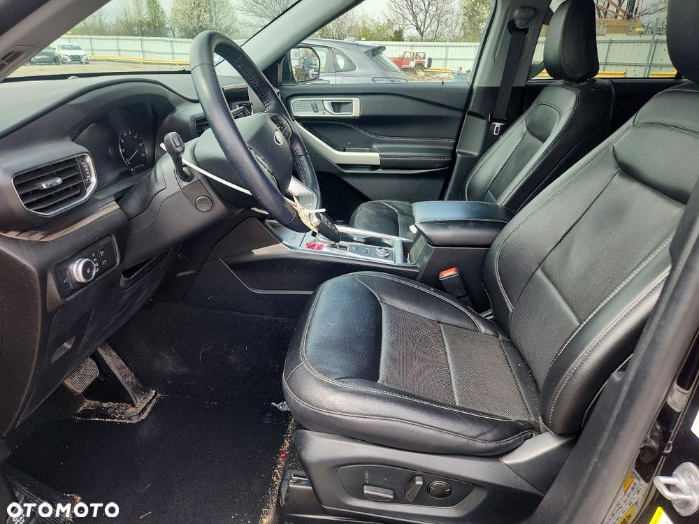
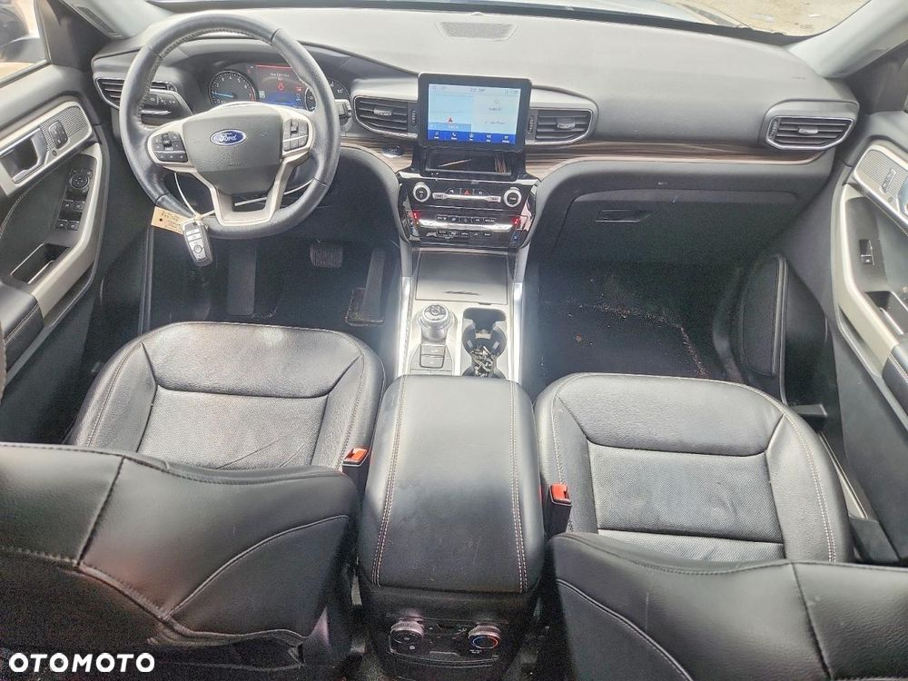
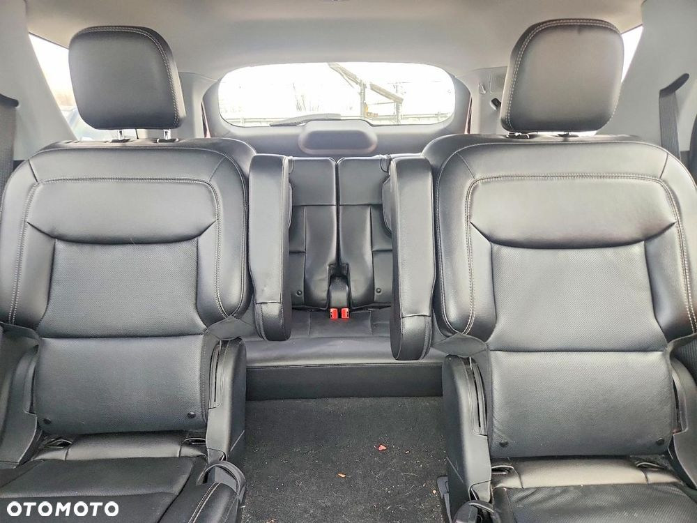
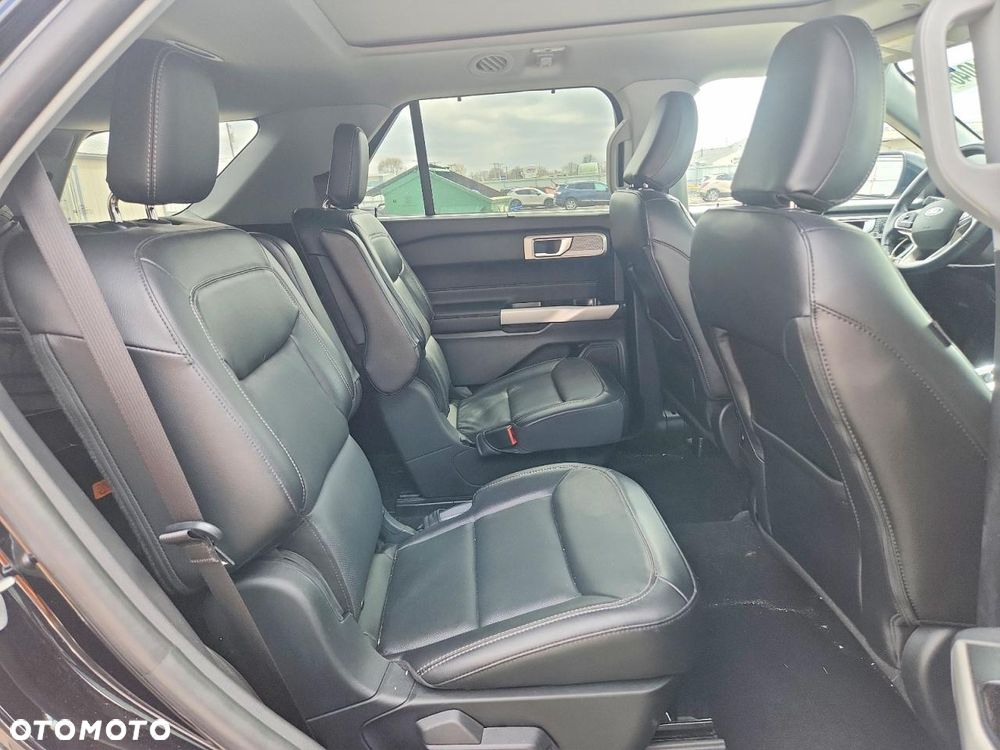
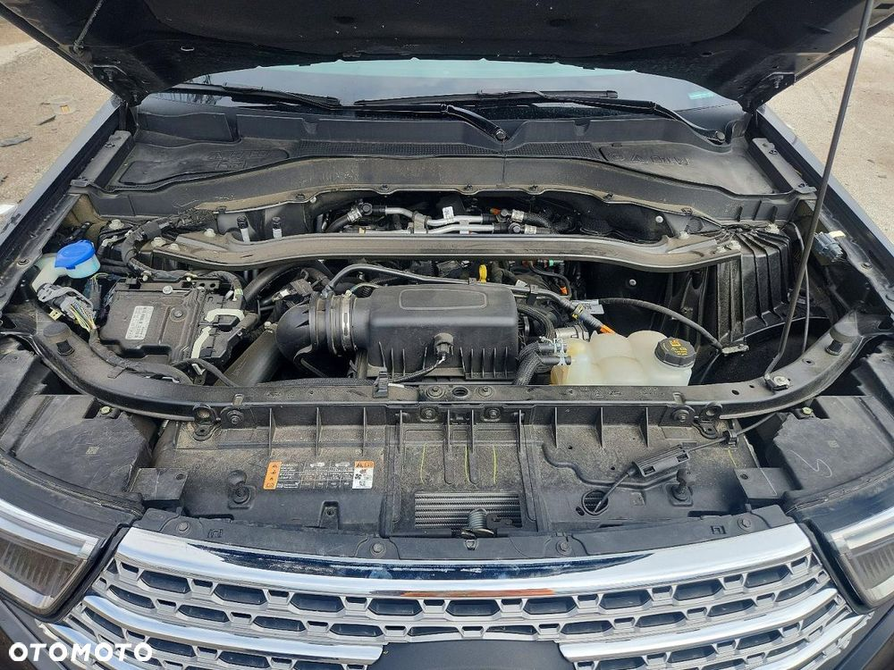